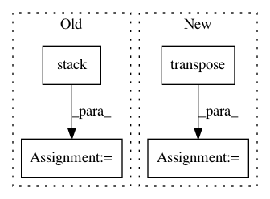

4b81ac641f68efc4c7e26ef03093781e28894c14,gluon/gluoncv2/models/superpointnet.py,SPDescriptor,hybrid_forward,#SPDescriptor#Any#Any#Any#,202
Before Change
pts_ravel_i = F.ravel_multi_index(pts_tr_i, shape=in_size)
desc_map_sorted_i = F.take(desc_map_i, pts_ravel_i)
desc_map_sorted_list.append(desc_map_sorted_i)
desc_map_sorted = F.stack(*desc_map_sorted_list)
return desc_map_sorted
After Change
desc_list = []
for i in range(batch_size):
desc_map_i = desc_map[i]
pts_i_tr = pts[i].transpose()
pts_ravel_i = F.ravel_multi_index(pts_i_tr, shape=in_size)
desc_map_sorted_i = F.take(desc_map_i, pts_ravel_i)
desc_list.append(desc_map_sorted_i)
In pattern: SUPERPATTERN
Frequency: 3
Non-data size: 4
Instances
Project Name: osmr/imgclsmob
Commit Name: 4b81ac641f68efc4c7e26ef03093781e28894c14
Time: 2019-07-04
Author: osemery@gmail.com
File Name: gluon/gluoncv2/models/superpointnet.py
Class Name: SPDescriptor
Method Name: hybrid_forward
Project Name: OpenNMT/OpenNMT-py
Commit Name: 68fbfd1876c367323acf830736bae1af499cc0fe
Time: 2018-03-07
Author: dengyuntian@gmail.com
File Name: onmt/modules/Transformer.py
Class Name: TransformerDecoder
Method Name: forward
Project Name: arraiy/torchgeometry
Commit Name: e18e682858c57124d46c40e8ab1d136c009a1f69
Time: 2020-10-06
Author: daniel.koguciuk@gmail.com
File Name: kornia/geometry/homography.py
Class Name:
Method Name: find_homography_dlt